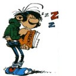

Forums galactiques > Assemblée Galactique : diplomatie officielle > Le tombeau de Calomu
| Seigneur vador Respect diplomatique : 280  17/06 ETU 17:32 | Score : 3 Détails Le com-X de vador re-vibra en plein milieu du combat,ce qui commencait a l'aggacer:
(vador):Quoi encore??? (capitaine dax):Hum...monseigneur il y a un petit probleme,dame cassandra et son groupe se dirige vers vous et... (vador):QUOI!!!!!!MAIS TU VAS PASSER AU PELOTON D'EXECUTION!!!! (capitaine dax):C'est pas ma faute ils ont courru avant que je n'ai pu réagir... (vador):Bon restons calme...nos renforts de la 352eme,147eme et 263eme compagnie sont arrivés,si ont veut,je veut que tu les rejoigne et que tu attaque les gholzios les plus proche de la cathedrale,ca les coupera de leurs renforts pendant un bon moment... (capitaine dax):A vos ordres... Il raccrocha son com-X et se tourna vers les survivants d ela 501eme: "Soldats,aujourd'hui vous avez amplement prouvé votre courage et votre force,mais il nous faut faire encore un effort,je veut que des volontaires viennent avec moi pour charger vers la foret,je dois y rejoindre quelqu'un...les volontaires avec moi!!!!!! Comme vador autait pu le prévoir toutes la 501eme le suivit dans sa charge a travers es lignes... (capitaine dax):A vos ordres.. | ||
| Eiganjo Respect diplomatique : 289  17/06 ETU 17:48 | Score : 7 Détails Eiganjo se relevant a peine apres etre de nouveau tombé du sabre laser de vador fonca sur ses quattres pattes
pour le rattraper. Un des soldats de la 501e cru qu'il voulait attaquer vador et lui trancha une patte d'un coup sec. Tout a coup le frele animal(oui oui c'est moi) bondit sur l'imprudent , monta sur lui et le fit courir en etant sur son dos pour pouvoir rattraper vador Soldat:desole , je vous avai pas reconnu. Faut pas me tuer. Eiganjo: Pout l'instant continue de courir et accelere ou le bouton de mon blaster va bizarrement etre pousser. pres de vador Eiganjo:On va ou exactement? C'etait marrant les gholzios. Vador:On va chercher Cassandra. Eiganjo:Encore? Elle est toujours paume Vador:fait gaffe a ce que tu dis sinon ca te fera encore une patte en moins Eiganjo: ok ok. Mais je vois pas pourquoi je te suis alors qu'on pourrait aider gaston lagaffe sur le champ de bataille. Et je vois encore moins pourquoi tu t'obstine tout le temps a essayer d ela sauver. | ||
| Cassandra Respect diplomatique : 316  17/06 ETU 18:09  | Score : 2 Détails Cassandra et Grut enchaînaient les attaques, voyant les traîné des extrémités du sabre de Grut, et bizarrement, on aperçu comme une lueur au centre de la tête de lance de Cassandra, là où se trouve une pierre très précieuse : Cela créait un style de danse très somptueux à regarder. Mais bon on n'est pas la pour regarder un Gala de gym !!! Reprenons.
Pendant que Cassandra et Grut s’efforçaient d’avancer dans la masse, l’équipe avança prudemment. Mc Lod et Arkhana était armés avec la version un peu plus sophistiquée du vieux « Fusil à pompe » : Chaque cartouche permet d’éliminer au moins une douzaine d’ennemie. Cheep, se cachant un peu derrière eux, lançait des grenades explosives et paralysantes quand un officier allié lui lança un sac avec plein de grenades à l’intérieur : sur le sac était marqué « Grenades au lait de chèvres »… Cheep_ Sa se boit ça ??? Plastrod lui était resté en arrière, sur un point sur élevé avec un mini-canon ionique. Tania suivait le groupe d’Arkhana. Ne faisant pas attention, elle trébucha sur une racine et fit un saut d’un mètre avant de s’aplatire, face au sol. Les dénommés Golzios qui se trouvait sur les cotés coururent et fondit sur la pauvre fille, qui se retrouva étouffée sous un dôme d’ennemies. Se mettant en boules pour se protéger, criant pour qu’on vienne la sauver, Tania ne savais quoi faire, elle était paniquée. La Racine sur laquelle elle avait buté se souleva alors du sol. Une racine de plusieurs mètres de long, s’éleva sur le champ de bataille. Les Golzios fut apparemment surpris de voir une telle chose, tellement surpris qu’ils en oublièrent Tania. La Grosse racine se pencha et commença à tourner, balayant au fur et a mesure les Golzios qui se trouvait à proximité. Une fois le carnage fini, la racine se tendit vers Tania. Passant sous son corps, elle la releva. Tania était stupéfaite. Puis la racine retourna se figer dans la terre, au milieu des cadavres des Golzios Tania_ C’est…c’est…c’est TROP BON !!!! | ||
| Seigneur vador Respect diplomatique : 280 17/06 ETU 18:20 | Score : 1 Détails Alors qu'ils avancaient a travers la pagaille de la bataille,la 501eme fut bloquer par un amas de gholzios leur foncant dessus,par reflexe et pour ne pas perdre de temps vador fit appel a la force pour degager le chemin,mais un gholzios qui c'était faufilé derreire lui,lui planta une lance dans l'epaule,le gholzios fut immediatemment abattut par un soldat de la 501eme...craignant le pire pour leur seigneur,la 501eme se regroupa en cerle autour de vador:
(vador):Et merde...saloperie de bestioles,par derriere...Morrigan aide moi a me relever... (morrigan):Mais monseigneur vous êtes blesser... (vador):M'en fout,je veut retrouver cassandra... Un medecin arriva en courant: "Ce n'est rien,je vais vous reparer en quelques secondes... Le medecin appliqua une paumade a base de bacta sur la blessure qu icicatrisa trés vite...dés qu'il put se relever vador se remit a foncer a travers la bataille suivit par ses hommes quelque peu surprit... | ||
| Paymon Respect diplomatique : 79  17/06 ETU 19:02 | Score : 2 Détails Paymon se promenait dans la cité, s'approchant tranquillement du centre, ou se dressait une immense tour blanche. Il était impressionné par l'énorme travail que ce peuple avait dû fournir pour construire ce gigantesque ouvrage.
Arrivé au pied de la tour, il sentit une faible émanation d'énergie plusieurs mètres sous l'édifice. Des cadavres des pseudos-Gholzios étaient éparpillés autour de la tour. Certains d'entre eux s'étaient entretués. -Je ferais mieux d'aller voir à l'intérieur. Si des commandants viennent voir cette tour, ils risquent de subir le même sort que ces Gholzios. Il s'approcha de la tour, mais fut bloqué à une centaine de mètres par un mur invisible. Surpris par la puissance du champ de force qui l'empêchait de passer, il décida d'en faire le tour. Il déploya ses sens afin de trouver une faiblesse dans le champ de force. La forme de ce champ était plutôt étrange: Sa base était semblable à celle de tout les champs magnétiques, mais au lieu d'avoir une forme arrondie, il était conique et entourait complètement la tour. Impossible qu'un humain puisse le traverser, et encore moins le détruire. Paymon se reconcentra et se mit à réfléchir. | ||
| Herbert Von Panzer Respect diplomatique : 502  17/06 ETU 19:48 | Score : 0 Détails TRANSMISSION COM-LINK
"Commandant Von Panzer ! L'ennemi a fui pour partir défendre la cathédrale ! Nous n'avons plus besoin d'envoyer le fléau ! -Gardez le tout de même en réserve pour faire un coup de nettoyage ! -Bien mon commandant !" FIN DE TRANSMISSION COM-LINK "Soldats, nous allons nous diriger vers la ville principale. Une fois là bas, nous nous occuperons des golzios restants. Les troupes blessées ont été soignées, des renforts arrivent, nous allons être un peu plus nombreux ! tenez bon ! -Lieutenant, nous avons un problème... -Lequel ? -Le fléau... Qu'en faisons nous ? -On l'embarque ! Il nous servira une fois là-bas... Enfin, si on peut éviter de s'en servir, ce sera mieux... -Bien lieutenant..." Le peloton se mit en route. La distant les separant de la ville était faible, mais ils étaient exténués, et ils mirent plusieurs heures pour atteindre cette ville, surplombée par cette gigantesque tour, mettant la ville entière dans le noir. La cage du fléau était en train de bouger dans tous les sens, et on sentait qu'il voulait sortir... Mais il fallait le laisser enfermé. Aucun soldat n'avait réellement envie de se trouver en face de lui, rien que le nom de "fléau" était assez évocateur de ce qui allait arriver s'il venait à s'échapper... Une fois dans la ville, le lieutenant Molotov vit quelques soldats alliés en train de se battre. La vraie bataille ne faisait que commencer... | ||
| Gaston Lagaffe Respect diplomatique : 401  17/06 ETU 20:17 | Score : 0 Détails L'indestructible citadelle blanche avait été fabriquée d'après les plans de Calomu. Ce dernier possedait (plus que tous les alliantiste) a fond l'art de la défense, et la citadelle qui se dresait devant les troupes de Lagaffe se maintenait inébranlable.
Comment des créatures comme les Golzios ont-il pu prendre possession de cette forteresse? se demandait Lagaffe, mais personne n'aurait jamais la réponse tant l'époque de la prise de cette citée était éloigné. Ce devait être à la toute fin de la guerre entre l'Alliance éternelle et la Fédération, bien avant les actuelles péripéties qui secouent la galaxie. Mais maintenant, c'était contre ses alliés que cette ville imprenable s'était retournée, les Golzios en en prenant posséssion avaient retourné les défences à leur profit. | ||
| Paymon Respect diplomatique : 79 17/06 ETU 21:50 | Score : 1 Détails Une infime vibration provenant du champ entourant la tour et que Paymon n'avait bizarrement pas remarqué lui donna une idée.
-Si j'arrive à entourer le champ de force et à vibrer à une fréquence opposée... j'arriverai peut-être à traverser. Il commença à s'étirer, enroulant de minces filaments sombres autour du champ magnétique, jusqu'à le recouvrir entièrement. Le plus difficile était maintenant de faire vibrer chacune des particules composant Paymon à l'unisson, régulièrement et assez longtemps pour neutraliser le champ de force. Un grondement sourd s'éleva lorsque Paymon se mit à vibrer, résultat du combat qui se déroulait entre le commandant et la muraille intangible. Paymon commença à traverser, lentement, le champ de force. Plus il progressait, plus le grondement s'amplifiait, jusqu'à faire trembler le corps de tout ceux près de la cité. Finalement, le bruit cessa, preuve que Paymon avait traversé. Il s'approcha de la tour... | ||
| Herbert Von Panzer Respect diplomatique : 502 18/06 ETU 17:42 | Score : 1 Détails Le combat n'arrivait pas à aboutir, aucun des deux camps n'arrivait à prendre le dessus sur l'autre. C'est alors que le lieutenant Molotov regarda sa montre. Cela faisait plusieurs jours que la bataille avait commencé, et ses hommes commençaient à être fatigués. Les renforts, envoyés depuis la planète Cerbera, avaient été interceptés et tués pas des pirates, les stocks de munitions arrivaient à terme, tout semblait perdu.
Il réfléchit un long moment. Il hésita, il savait le danger que cela représentait. Il fit alors un signe à ses hommes qui sonnèrent la retraite. "En espérant qu'aucun commandant ne croise sa route... Soldats ! RETIREZ VOUS ! RELACHEZ LE FLEAU !" Les soldats, appeurés à l'annonce de cet ordre, partirent en courant jusqu'aux portes de la ville. Seule restaient au milieu d'une place publique une cage, et le lieutenant Molotov. Il avait dans les mains une petite télécommande qu'il tenait, les mains tremblantes. Certains d'entre vous doivent se demander ce que peut bien être un "fléau de Cerbera"... (le suspense a donc bien été fait !) Lors de la grande bataille de Bartatos, capitale de Cerbera, opposant les forces du dictateur Cornius aux rebels menés par Herbert Von Panzer, jeune commandant, les généticiens rebels avaient conçu une arme organique invincible. Il s'agissait d'une créature dont le génome de base était celui d'un vampire cerberien. Ces créatures étaient assez éloignées des vampires connus par tous, et il tenait plus de l'animal que de l'homme. On aurait dit une chauve-souris géante. Mais l'interet était surtout la capacité de cet être à se régénérer après avoir été blessé, ceci en faisant une arme de guerre presque impossible à tuer. Sur cette base, ils avaient rajouté des gènes d'animaux féroces, l'avaient doté des griffes les plus puissantes, des machoires les plus meurtrières, avaient fait de cet animal un être capable de voler. Même blessé, il pouvait continuer à se battre Mais lors de la bataille, les troupes rebelles ont perdu le contrôle de l'animal, et celui ci s'est retourné contre eux et a décimé plus de la moitié des troupes, alliées comme ennemies. C'est donc le dictateur Cernius qui, au terme d'une longue bataille, se sacrifia, bardé d'explosifs, afin de tuer la bête. Lors de son élection, Von Panzer fit ériger une statue en son honneur, afin de garder en mémoire l'acte héroïque de cet homme, pourtant détesté par son peuple. Molotov alluma une cigarette. Il appuya sur le bouton d'ouverture de la cage, puis ferma les yeux. La bête lui passa à côté, puis s'envola en direction de golzios qui fonçaient vers eux. | ||
| Gaston Lagaffe Respect diplomatique : 401 18/06 ETU 18:08 | Score : 0 Détails Lagaffe entendit sur sa radio l'ordre d'Herbert von Panzer. Il ignorait complètement ce qu'était le fléau et de ce fait s'atristait du retrait des troupes d'Herbert.
"- Bah, se disait-il, mes renforts arriverons dans quelques instants. Herbert a permis à mon bataillon de tenir 74 heures avec un nombre restreint de perte. Avec les darktrooper de Vador, nous devrions chasser ces Golzios..." Soudain, un souffle passa près de lui et il vit une horreur sans nom, un monstre noir. Cet créature se jeta sur un Golzio et commença à le déchiqueter. Mais muent par un reflexe de combattants, les troupes de Lagaffe observèrent le nouveau venu et estimèrent qu'il s'agissait d'une menace. Les gaffosoldats tirèrent et l'horrible bête s'écroula sans vie. Mais Lagaffe vit le corp de la créature s'animer d'un soubressaut et soudain le fléau (Lagaffe avait enfin fait le rapprochement entre les ordres d'Herbert et les evenement qui se déroulaient devant lui) se releva dans une furie accrue. "- Ammenez nous un transport aussi vite que possible, priorité absolue!! Que les renforts stoppent leurs progressions. - Bien commandant." Puis Lagaffe s'adressa à ses troupes. "- Ralentissez les Golzios, je vais tenter de ralentir ce monstre. Et éloignez-vous!!" Il prit son fidèle gaffophone portable et commença à jouer. Le fléau se réécroula sur le sol dans un hurlement terrifiant, mais Lagaffe voyait que le gaffophone l'empechait seulement de bouger. Dès que la mélodieuse musique cesserait, la bête se releverait. Dans un souffle puissant, le transport attendu se posit près des gaffosoldats. "- Embarquez, nous rejoignons les troupes de Vador et nous laissons le fléau s'occuper des Golzios. Mais même cette horreur ne penetrera pas dans la citadelle." | ||
| Herbert Von Panzer Respect diplomatique : 502 18/06 ETU 18:58 | Score : 0 Détails Alors que le fléau allait se jetter sur le vaisseau de transport, il aperçu un groupe de golzios. Il se rua sur ceux ci, les mis en pièces, puis continua son chemin à travers la ville. Molotov le suivait, à distance, sa télécommande à la main, afin de lui faire exploser la cervelle une fois que suffisamment d'aversaires seraient hors d'état de nuire.
TRANSMISSION COM-LINK "Lieutenant Molotov, comment avez vous osé lacher le fléau sans m'en avertir auparavant ? -Commandant, je pensais que notre discutions d'hier avait été suffisante... -Je viens de recevoir une plainte du commandant Gaston Lagaffe qui a failli se faire déchiqueter ! -S'il y avait eu une réelle menace, j'aurais fait exploser la tête de cette chose... -Vous avez de la chance d'avoir la télécommande... Mais n'en abusez pas, nous n'avons que 8 spécimens. Ils sont stériles et ne peuvent pas se reproduire. -Je navais pas ce détail en ma possession commandant... -La prochaine fois, prevenez moi ! Ce ne sont pas des jouets, ce sont des armes de mort !" FIN TRANSMISSION COM-LINK Le lieutenant se sentait mal, il venait seulement de comprendre l'étendue de son acte. Le fléau, laché, était incontrôlable. Il avait bien quelques ordres préprogrammées, lui ordonnant de tuer les adversaires du possesseur de la télécommande, mais ses instincts meurtriers étaient parfois supérieurs, et il pouvait entrer dans une véritable folie sanguinaire. Au fur et à mesure que le fléau détruisait les golzios, des darktroopers arrivaient et prenaient les places ainsi nettoyées, et montaient des avant postes. Molotov suivait toujours l'animal. Il avait en chemin retrouvé quelques uns de ses hommes qui s'étaient égarés. Mais les survivants n'étaient pas nombreux, et leur probabilité de survie face au fléau avoisinait le zéro. Il fit alors dépecher un de ses hommes aux avant-postes de Vador, afin de faire venir des équipes médicales pour s'occuper des blessés. Le fléau faisait un véritable carnage, une boucherie sangunaire. On avait rarement vu un tel massacre sur cette planète, et le rouge du sang des golzios contrastait avec le blanc immaculé de la citadelle. Les golzios voyaient les leurs étripés, et le fléau mangeait et suçait leur sang. Il finissait par écraser les têtes avec ses puissantes pattes arrières afin de les empecher de muter en vampires. Il voulait avoir seul le privilège de manger autant. Il finit par arriver devant la porte de la citadelle. | ||
| Gaston Lagaffe Respect diplomatique : 401 18/06 ETU 19:04 | Score : 1 Détails Mais là, sur le pas de la porte, il dut s'arreter. Rien ni personne ne pouvait réussir une attaque directe contre la citadelle.
En voyant cela, Lagaffe prit son com-link et appella Herbert: "- Essayez de faire en sorte que votre monstre détruise les Golzios qui sont à l'exterieur et abbattez le. Un fois ceci fait, nous pourrons partir aider Dame Cassandra et réfléchir à la manière de pénetrer dans cette ville. Seule la ruse et l'intelligence marcheront. Le système de sécurité est imprenable." | ||
| Herbert Von Panzer Respect diplomatique : 502 18/06 ETU 19:16 | Score : 1 Détails Von Panzer fit passer l'ordre de détruire le fléau une fois que la voie serait libre pour acceder à la citadelle.
Après qu'il aie réduit en miettes tous les golzios, le collier d'explosifs lui fit sauter la cervelle. Lui qui était alors en vol vint s'écraser lourdement sur le sol, ne laissait qu'un cratère, avec en son centre un corps noir inanimé, baignant dans une flaque de sang. Les équipes scientifiques dépéchées par Von Panzer venaient d'arriver sur l'orbite de la planète, et vinrent se poser sur la place la plus proche. Du petit vaisseau sortirent quatre hommes, en combinaisons blanches, avec des masques à gaz, tenant un brancard. Ils récupérèrent le corps du fléau, sur lequel il placèrent un drap blanc. Celui ci devint rouge en quelques secondes, laissant de petites coulure le long de la route séparant le petit cratère du vaisseau. Ils prirent de la même manière un golzio afin de pouvoir analyser son corps. Quelques instants plus tard, les troupes encore en état de se battre arrivèrent, et Molotov alla voir Gaston Lagaffe. "Veuillez m'excuser de ne pas avoir prévenu les commandants présents, mais je voulais disposer de l'effet de surprise. Les golzios n'ont peut-être pas nos technologies, mais s'ils avaient intercepté le message, nous aurions laché le fléau pour rien. Enfin tout cela n'est pas grave, vous êtes toujours là. Et je met toutes mes troupes à votre diposition. Quels sont les ordres ?" | ||
| Gaston Lagaffe Respect diplomatique : 401 18/06 ETU 19:18 | Score : 1 Détails "Hélas, pour l'instant je n'en sais rien. Je pense que nous devrions déja rejoindre les autres commandants qui sont sur place. Envoyez s'il vous plait des patrouilles en repérage."
| ||
| Seigneur vador Respect diplomatique : 280 18/06 ETU 20:56 | Score : 1 Détails Dans la plaine la situation c'était gelée,la 501eme ainsi que quelques gaffosoldats étaient totalement encerclés,de nombreux rapports arrivaient sur la fréquence radio normale,vador passa en prioritaire pour connaitre les nouvelles les plus alarmantes:
"Nous avons installés plusieurs avant-postes afin de renforeceer nos lignes...medecin envoyer un medecin ici(cri d'agonie puis silence...fléau relaché,je repete fléau relaché... Vador éteignit la radio,pis appela son caporal: (vador):Qu'est ce que le fléau??? (caporal):D'aprés ce que j'ai pu apprendre c'est un arme extrement dangereuse,pas autant que notre étoile noire mais bon,elle est dirigée par un homme avec une télécommande,il lui arrive de ne pas faire la difference entre les alliés et les ennemis et... (vador):Ca ira j'ai compris...communiquez au commandant von panzer de ne pas l'envoyer vers nous,on va se demerder... (caporal):A vos ordres... C'est a ce moment la qu'un gholzios choisit de sauter dans le dos de vador,mais il fut abbatu en vol par un darktroopers bléssé par une lance qui tomba sous le coup de la blessure,vador contemplant le corps du soldat...mais l'heure n'était pas encore venue de pleurer les morts...les lignes gholzios c'étaient reformées et chargaient dans la bataille...quand alors le terrain fut traversé par des traits bleus...de la colline sud était apparu des hommes...des hommes ammenés par le capitaine dax et qui chargaient eux aussi,arrosant les lignes gholzios de lasers...vador se fraya un chemin jusqu'au capitaine malgré le carnage: (vador):On était pas censer avoir plus d'hommes??? (capitaine dax):J'en ai envoyer beaucoup au commandant lagaffe et j'ai décidé de venir te donner un coup de main... (vador):Bien...tu nous as ammené des walkers bipedes???(TR-TT pour les fans) (capitaine dax):La 21eme blindée oui...mais tu les connait toujours en retards... (vador):Va vers la foret;trouve cassandra et ammene la moi... (capitaine dax):Vraiment???Tu ne prefere pas la savoir dans un vaisseau??? (vador):Non...elle sera bien plus en sécurité,auprés d ela 501eme...et de moi... (capitaine dax):Comme tu voudras,c'est toi le chef ici... | ||
| Gaston Lagaffe Respect diplomatique : 401 18/06 ETU 21:18 | Score : 2 Détails Lagaffe était seul sur cette portion du champs de bataille couverte de sang et de cadavre de Golzios. On pouvait voir un immense cratère , celui de l'explosion du fléau. Soudain la radio de Gaston sonna. C'était un patrouilleur qui appellait:
"- Commandant, ous avons repéré Dame Cassandra qui se dirige vers les troupes de Vador. "- Ammenez des transports pour que tous les soldats diponibles, les miens, ceux de Vador et d'Herbert, puisse rejoindre le front encore actif. Que les divisions blindées de Vador nous suivent également." Quelques minutes plus tard, Lagaffe embarquaitpour se retrouver après un cours trajet auprès de Vador. "- Je vous rends vos soldats, vos quadripodes arrivent. Merci de votre soutient, sans vous je n'aurais jamais tenu" | ||
| Seigneur vador Respect diplomatique : 280 20/06 ETU 10:14 | Score : 1 Détails "C'est encore loin d'être finit...d'autres divisions ont besoins de notre aide et j'ai cru entendre qu'il y en avait encore dans une cathédrale...et de votre coté,êtes vous parvenu a traversé ce champ de force???"
| ||
| Cassandra Respect diplomatique : 316 20/06 ETU 20:40 | Score : 1 Détails Après avoir nettoyé le champ de bataille, l’escouade se regroupa.
Cassandra_ Tout le monde au rapport ! Mc Lod, Arkhana, Cheep et Plastrod n’eu reçu aucun dommage. Grut_ Ils sont où les lutins ??? Cassandra_ Attends 2secondes, tien monte en haut de ce grand roché et dit-nous ce que tu y vois. Grut commença l’ascension de la roche. Tania se faisait discrète dans l’assistance. Cassandra_ Et toi Tania ? Tania_ Bah… « encore sous le choque de ce qui vient de lui arriver » Il s’est passé quelque chose de spéciale. Cassandra_ J’ai vu ça ! Apparemment tu serais une de ses fameuses Dames Natures ??? Tania_ Une vielle dame que j’avais croisé à Fleuraniera et jour m’avait sauté dessus en me disant que j’avais *Le sang de Gaïa* dans les veines, apparemment elle n’avait pas tout à fait tord. Cassandra_ Tant mieux mes maintenant il va falloir que tu essaye de canaliser cette énergie, de trouver sa force et d’apprendre à l’utiliser… Grut_ SEIGNEUR !!!!!!!! Cassandra_ de quoi ?? OU CA ??? Grut_ Là-bas avec beaucoup de monde et « Il sortit son sabre et se lécha les babines » Cassandra_ Et quoi ? Grut_ Plein de lutin GOLZIOs ! CHARGEZ !!!!!!!!!! Cassandra_ Mais apparemment ce n’est pas des Golzios… Grut fonçait déjà en direction de la zone de combat. Cassandra_ Bon allons-y. Dépêchons-nous, j’ai quelqu’un à voir. | ||
| Seigneur vador Respect diplomatique : 280 21/06 ETU 08:45 | Score : 0 Détails Vador et ses hommes étaient toujours aux prises avec des gholzios,mais vu que leur nombre était plus insignifiant qu'avant,c'était plus une partie de chasse qu'autre chose:
(un soldat):YEAh!!!!!!prends toi ca dans la tronche (vador):Zik,arretez de faire le mariole allez couvrir le medecin plutot... Un homme approcha de vador en courrant: (Mon seigneur,je viens d'apprendre que la 342eme et la 33eme divisions viennent de tomber en embuscades,apparamment on est loin de tous les avoir eu... (vador):pfffff il sont increvables ou quoi???Bon dés qu'on a finit ici envoyer la 501eme se reposer,c'est elle qui a le lus soufferte...ensuite nous nous dirigerons vers la cath...KOI????? (le soldat):Je croit qu'il y a quelqu'un qui voudra vous voir avant...en haut de la colline.... Vador se tourna vers la colline et appercu le groupe de cassandra avec a sa tete grut qui foncait dans les gholzios restant... | ||
| Herbert Von Panzer Respect diplomatique : 502 22/06 ETU 04:40 | Score : 0 Détails Herbert Von Panzer venait d'arriver en personne, les déboires de ses troupes avec le fléau l'avait quelques peu contrarié, et il désirait prendre la tête des opérations en direct.
Il fit poser sa navette à proximité de l'avant-poste où se trouvaient Gaston, Vador et ses propres hommes. "Commandant Gaston, pourquoi n'êtes vous toujours pas entré dans cette cathédrale ?" En prononçant ces mots, il fonça à l'assaut de la tour. Mais le Von Panzer se trouva fort dépourvu parcce que le champ de force il n'avait pas vu... Il s'écrasa lamentablement contre le champ de protection puis, tout en se relevant dignement, comme si de rien n'était, il dit : "Je n'ai rien dit... Bon, nous devons à tout prix stopper ce champ de force... Quelqu'un a une idée ? On se contente de les garder en état de siège, ce qui risque de prendre un sacré moment, ou alors on tente un assaut, en trouvant un moyen de couper l'arrivée d'énergie de la protetion, comme en faisant sauter la centrale énergétique que j'apperçois là bas au sud ?" A peine avait-il dit ça, les commandants qui était avec lui regardèrent dans la direction de la centrale énergétique, et se demandèrent pourquoi ils ne l'avaient pas remarqué plus tôt... |
Forums galactiques > Assemblée Galactique : diplomatie officielle > Le tombeau de Calomu